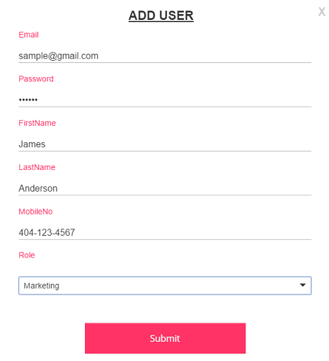
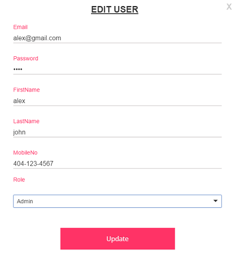
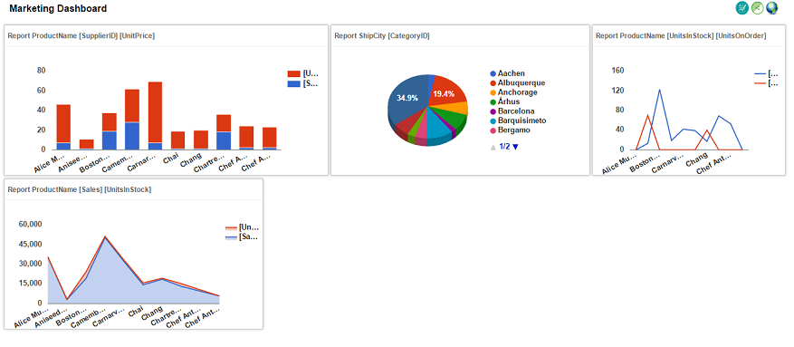

DEFINING USERS
There are two types of users
-
1) Admin
2) Non-Admin
Admin users are able to create, edit reports and dashboards and also can add new users. Admin user can able to define roles and can able to assign roles to users.
Non-Admin users are able to login to view and specific dashboards based on the role which they have been granted access to.
ADDING A USERS
You can be add new user in the Users tab in your account settings.
- Click Users.
- Click the + icon on top.
- Enter the Email Address, First Name, Last Name, Password, Phone no.
- Select role type Admin, if user is admin otherwise select the specific role.
- Click Submit.

An email will be sent to that email address confirming that you have given the access to the dashboard.
Note:It's not currently possible to add an email address that already belongs to another Roosboard account, so the user you invite will be prompted to sign up for a new Roosboard account.
EDIT USER
You can be edit users in the Users tab in your account settings.
- Click Users
- Click the SELECT button on user type.
- Edit the First Name, Last Name, Password, Phone no.
- Change any user type.
- Click Update.

An email will be sent to that email address confirming that you have given the access to the dashboard.
Note:It's not currently possible to add an email address that already belongs to another Roosboard account, so the user you invite will be prompted to sign up for a new Roosboard account.
DELETE A USER
- Click the Delete button for which User you want to delete.
- If you click the delete button it will show the confirmation dialogueYes.
- If you click the Yes on confirmation dialoge,it will delete the corresponding User.otherwise nothing will be deleted.
DEFINING ROLES
There are two types of roles.
-
1) Display
2) Edit
Edit users are able to login to view and edit specific dashboards and reports based on the role which they have been granted access to.
Display users are able to login to view and specific dashboards and reports based on the role which they have been granted access to.

ADDING A ROLE
You can be add new role in the Roles tab in your account settings.
- Click Roles.
- Click the + icon on top.
- Enter the Role name and select User Role type as Display or Edit.
- Select the User.
- Select dashboards and reports that you are granting an access to the role.
- Click Save.
EDIT A ROLE
You can be edit role in the Roles tab in your account settings.
- Edit the Role name and select User Role type as Display or Edit
- Change the User
- Change any dashboards and reports that you are granting an access to the role.
- Click Update.
DELETE A ROLE
You can be delete role in the Roles tab in your account settings.
- Click the Delete button for which role you want to delete.
- If you click the delete button it will show the confirmation dialogueYes.
- If you click the Yes on confirmation dialoge,it will delete the corresponding role.otherwise nothing will be deleted.
DATA SOURCE
To generate a chart/report, Roosboard needs authorization to connect your MySQL or SQL Server database.
ADD DATA SOURCE
New database connection can be add in the DATA SOURCE tab in your account settings.
- Click DATA SOURCE.
- Click the + icon on top
- Select the server name.
- Enter connection name which can anything that is used to identify the connection.
- Enter IP Address/URL, Database name, User Name and Password.
- Default Port for SQL server 1433. Default for MySQL is XXXX.
- Click Submit.
EDIT DATA SOURCE
You can be edit the Database DATA SOURCE tab in your account settings.
- Click Edit.
- Edit connection name which can anything that is used to identify the connection.
- Edit IP Address/URL, Database name, User Name and Password.
- Default Port for SQL server 1433. Default for MySQL is XXXX.
- Click the Update button.
- Then updated your database connection.
DELETE DATA BASE
You can be delete database in the Roles tab in your account settings.
- Click the Delete icon and then click Yes on confirmation.
- Check your Data source page.
CHARTS
CREATE CHART
- Click the <- arrow icon on top.
- Select the database.
- Enter the expression Search / Enter button.
- Display the chart. Default chart type is Column chart.
- Click Pin Icon.
- Choose the dashboard and place to your chart.
ADVANCED FUNCTIONS
Roosboard Advanced functions are four types.
- GROUP BY FUNCTIONS
- FILTER
- MAP OPTION
- PIVOT TABLE
- Click GroupBy Function.
- Selected integer values are follow Sum of,Avg of,Minimum of,Maximum of, Anyone you selected then chart is changed.
- Click the Submit button to change a main chart.
- Click Filter.
- Select any Expression.
- Selected Expression values are Filter.
- Click the Submit button to change a main chart.
- Click Map Option.
- Roosboard supports three type of Geo Mapping option.
- Region Mapping option
- Marker Mapping option
- Text Mapping option
- Selected type Map options are split to Continent,Sub-Continent,Country wises.
- Choose the type and Click the Submit button to change a main chart.
GROUP BY FUNCTIONS
FILTER
GEO MAP OPTIONS
PIVOT TABLE
CHART TYPES
Roosboard supports more than 20 different types of charts which includes basic chart types of Line, Bar, Column charts to see list of charts.
Area Chart
Bar Chart
Bubble Chart
Pie Chart
Colunms Chart
DEFINING DASHBOARD
In real-world terms, "dashboard" is another name for "progress report" or "report." Often, the "dashboard" is displayed on a web page that is linked to a database which allows the report to be constantly updated.

CREATE DASHBOARD
- Click the + icon on top.
- Then select your charts and click the OK button.
- Your selected charts now added on dashboard.
- Enter Dashboard title.
- Click the Save button your dashboard saved.
EDIT DASHBOARD
- Select dashboard.
- Click the Edit icon on top.
- Edit dashboard name, add new charts, remove charts.
- Click the Update button your dashboard updated.
SLIDE SHOW
A slide show is a presentation of a dashboard that contains collection of charts are prearranged sequence.
The changes may be regular intervals or they may be manually controlled by a user.
ADVANCED FUNCTIONS
Roosboard gives advanced dashboard functions.
- Drill down
- Cross over
- Full size
- Delete
DRILL DOWN
Drill down means to move from one chart to another chart, information to detailed data by focusing in on something.
"drilling-down" may involve clicking on some representation in order to reveal more detail.
if you need a Drill down function.
Before the Drill down.
After the Drill down.
CROSS OVER
A point or values of crossing from one chart to the another chart.
if you need a Cross over function.
Before the cross over.
After the cross over